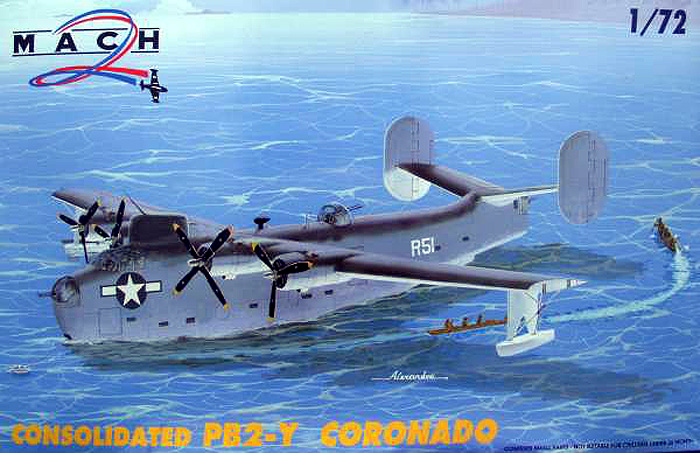
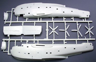
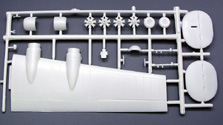
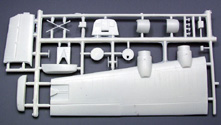
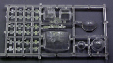
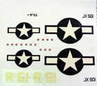

{kind=link}
{kind=link}
{kind=link}
{kind=link}
{kind=link}


Mach 2 1/72 scale PB2-Y Coronado

Kit #0035
MSRP $84.94
Images and text Copyright � 2007 by Gary Buchanan
Developmental Background
The PB2Y was the end result of a contract placed by the Navy in July of 1936 for a large four-engined maritime reconnaissance bomber flying boat. Designated the Model 29 by Consolidated and XPB2Y-1 by the Navy, the XPB2Y-1 flew for the first time on December 17, 1937, powered by four 1,050 h.p. Pratt and Whitney Twin Wasps. Initial trials revealed serious lateral instability. Initially auxiliary vertical tail surfaces were fitted and although some improvement resulted it was found necessary to redesign the entire tail assembly using twin tails with circular end plate vertical surfaces. The XPB2Y-1 was eventually delivered to the Navy and after completing trials became the Flagship of the Aircraft Scouting Force.
While the aircraft was acceptable to the Navy their budget prevented them from ordering more until March of 1939 when six production aircraft were ordered under the designation PB2Y-2 with the first of these being delivered on December 31, 1940. The hydrodynamic characteristics of the XPB2Y-1 left much to be desired and Consolidated had taken the opportunity provided by the Navy's lack of funding to redesign the hull making it substantially deeper than the prototype and the circular tail fins were changed to an oblong configuration similar to those of the B-24. Power was increased on the PB2Y-2 using Twin Wasps rated at 1200 h.p. Named the Coronado the PB2Y-2 carried a crew of nine and had a defensive armament of six 50-caliber machine guns. The PB2Y-2 was the fastest version of the Coronado with a top speed ranging from 224 M.P.H. at sea level to 255 M.P.H. at 19,000 ft. The six were used primarily for experimental purposes as they lacked self-sealing fuel tanks and armor protection for the crew.
One of the six was converted as the XPB2Y-3, the production PB2Y-3 having been ordered in November of 1940. The PB2Y-3 had self-sealing main fuel tanks and 2000 lb. of armor protection for the crew and the defensive armor was increased to twin 50-caliber machine guns in bow, dorsal and tail turrets and 50-caliber machine guns in each of the beam positions. Later PB2Y-3's were equipped with surface search radar installed in a housing aft of the flight deck. A total of 210 PB2Y-3's were built with the last one being delivered in October of 1943. Ten of the Coronado's designated PB2Y-3B were delivered to the British under Lend-Lease which were intended to be used by RAF Coastal Command but ended up being transferred to Transport Command and were used to fly freight across the Atlantic and between Africa and the West Indies. Thirty one others were converted by Rohr Aircraft Corporation for the transport role under the designation PB2Y-3R. Part of the conversion included replacing the Twin Wasps with two speed superchargers to single stage low-altitude engines rated at 1,200 h.p. at sea level with the propellers of the inboard engines being four-bladed and the outboard being three bladed. Additionally all military equipment was removed and the bow and tail turrets openings were faired over.
One PB2Y-3 was experimentally fitted with Wright 2600 Cyclones as the XPB2Y-4. Following the successful power plant modification of the PB2Y-3R, other -3 were converted to the low-altitude engines under the designation PB2Y-5. The re-engined patrol bomber featured an increased fuel capacity with the normal fuel load increased from 1,580 gallons to 2,512 gallons, which provided a range with an 8,000 lb. bomb load to 1,640 miles. Other-3 conversions with the low-altitude engines had all the military equipment removed and were used as ambulance aircraft in the Pacific under the designation PB2Y-5H.
The kit
Note: I have yet to pay even the regular Squadron price for any Mach 2 kit as I feel they are over priced. I have a couple that I got on comsale for half price and another, which I snagged on Ebay.
Mach 2 kits have a mostly bad reputation as being some of the worst short run kits on the market, usually displaying sink marks on the wings and fuselage, huge ejector pin stubs on the inner surfaces, rough surface texture, and terrible clear parts and flash every where. This kit seems to be one of Mach 2's better attempts. While the surface still has some roughness and irregularities there were no sink marks that I could see and the engraved panel lines seemed to be uniform and didn't disappear as on some of their other kits. Still lots of ejector stubs and the small parts are still flash laden and the clear parts could be better. Little in the way of interior detail is provided, a bulkhead, floor, seats and control columns. The box doesn't state what version the kit is and the instructions are labeled PB2Y-2, however a -2 two it isn't. The -2 lacked the turrets, had totally different beam positions, and had a large blister on the top where the dorsal turret is located, did not use the radar housing above and behind the cockpit and didn't have the four-bladed props on the inboard engines. The kit can best be used to represent a -5. The -3 could be done by replacing the inboard propellers with three bladed units.
Let�s take a look at what's in the box. There are five sprues of white plastic. Two sprues are nearly identical with bottom wing halves and various other parts, another nearly identical pair have upper wing halves and various other parts and a third has the fuselage and various other parts. Total parts count 87. See below...
There is one sprue with clear parts if you can call them that, typical of most Mach 2 kits. Future may help them some. Unfortunately there are no after market vacuformed replacements available. Parts count 32 for a total of 119 in the box. See below...




You may click on the small images above to view larger pictures
The decal sheet has the markings for the aircraft shown on the box top. The painting instructions show the colors and markings for an RAF aircraft but notes that roundels and fin flashes are not included. Other than the Star and Bar and the aircraft number the only other markings supplied are the manufacturers decals for the props. The decals look OK but I have no experience with Mach 2 decals so I can't comment on them. You may click on the image at right to view a larger scan of the decals.
The instruction sheet consists of a single A4 size page with various sub assemblies shown on one side and painting and lettering shown on the other. There are only a couple written notes on the assembly side which indicates where most of the small parts go but nothing showing the fuselage, wing or wing to fuselage assembly so you are pretty much on your own. The kit does come with beaching gear.
Conclusions
I test fitted the fuselage halves just out of curiosity. While they seem to match up pretty well, assembling them will be a challenge. One half has a bulge in the bottom of the fuselage just past the step that may be tough to fix and it looks like some addition bulkheads would be helpful to maintain the fuselage shape while gluing. As with all the kits from Mach 2 much labor is required to clean up flash from small parts and the lack of alignment pins makes assembly challenging. I would recommend the kit only to die hard seaplane fans and those with multiple limited run kit experience.